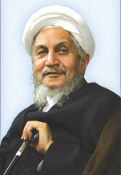

|
|

فتوای جدید آیت الله صانعی: در نبود ورثه دیگری، تمام اموال مرد بعد از مرگ به همسرش می رسد
دو شنبه8 بهمن 1386
تغییر برای برابری: آیت الله صانعی در فتوایی جدید، اعلام کرده اند در صورتی که مردی بمیرد و هیچ وارثی جز همسرش نداشته باشد، تمام اموال وی به زن به ارث می رسد. این در حالی است که طبق قانون ایران؛ اگرمردی فوت کند و هیچ وارثی جز همسرش نداشته باشد فقط یک چهارم از قیمت ابنیه و اشجار و اموال منقول شوهر به او ارث می رسد و بقیه اموال شوهر متعلق به دولت خواهد بود.
آیت الله صانعی در پاسخ به این سوال که اگر مردى از دنيا برود و تنها وارثش همسرش باشد، چه مقدار از ماترك متوفّا به وى مى رسد؟ فتوا داده اند:« در صورتى كه زوج، وارث ديگرى غير از زوجه نداشته باشد، كلّ ماتركش به همسرش مى رسد و اين عمل، مطابق با احتياط، بلكه خالى از قوّت هم نيست.»